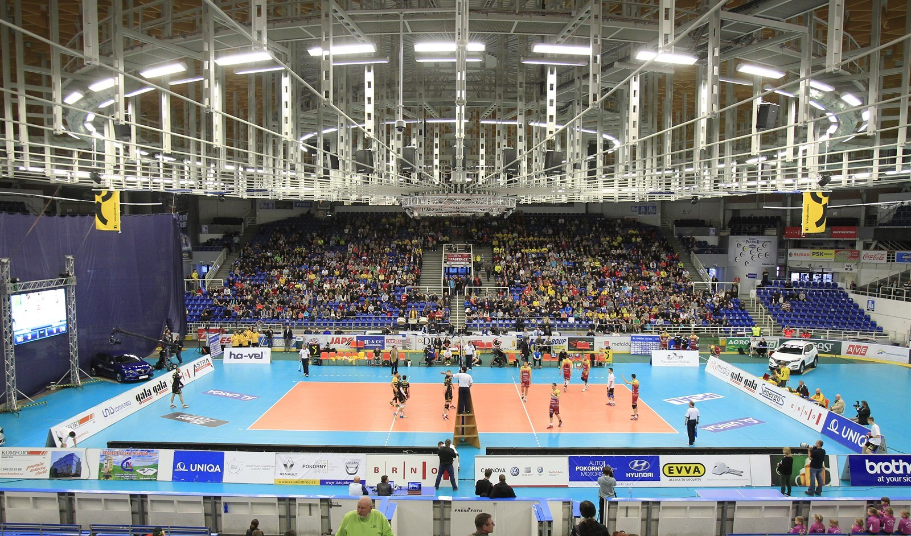

Napsala: Ela Štercová
Datum: 24.4.2026
Volejbalistky Šelmy Brno se na domácí půdě v Rondu Winning Group areně vrací na vítěznou vlnu. Po dvou předchozích porážkách přemohly Duklu Liberec a to s velkým náskokem. Od začátku šla vidět snaha zlomit neúspěšnou sérii. Předvedly soustředěný výkon, ve kterém se opřely o kvalitní servis i pevnou hru na síti. Šelmy si postupně budovaly náskok a zápas skončil výhrou 3:1. Výborným výkonem se tak udržely v boji o 1. místo v play off extralize žen.

Zdroj: Oficiální instagram @vkbrno